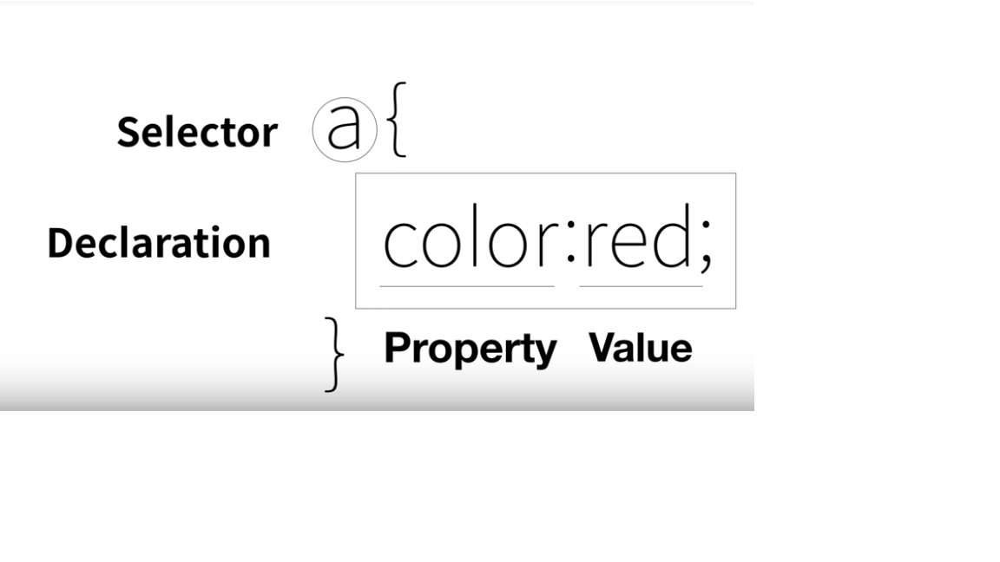
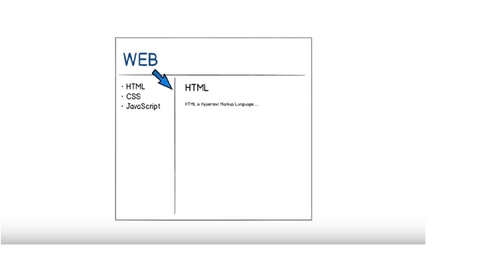

생활코딩 CSS 강의 시작
CSS가 등장하기 전의 상황
CSS의 등장
html에서도 코드를 주석처리 할 수 있는데 그 방법은 !-- ~~ -- 를 꺽새로 열고 닫으면 된다.CSS의 기본 문법
style
웹브라우저에게 HTML문법과 CSS문법을 구분시킬 때 사용하는 태그
속성 사용
CSS
아까 폰트 태그와는 다르다는 것을 구분 해야함.
text-decoration
위에 목차에 있는 밑줄들이 보기가 싫으면 스타일 태그 안에
text-decoration:none삽입.혁명적 변화
이것을 잘 알고 있어야함!

CSS속성 스스로 알아내기
아.. 내 웹페이지에 가장 큰 제목의 크기를 더 크고 가운데 정렬 시키고 싶다!!!! 그러면 검색엔진에 가서CSS 선택자의 기본
웹페이지에 있는 모든 a태그를 검은색으로 바꾸고 사용자가 방문했던 적이 있던 링크는 회색으로 바꾸고, 현재 사용자가 머물고있는 링크는 빨간색으로 바꾸고 싶다.박스 모델
박스 모델 써먹기
지금까지 박스 모델에 대해 많은 것을 배웠다. block형식과 inline형식을 잘 구분해 보고 css의 속성들을 잘 사용해서 궁극적인 목표를 완성해나가보자.
그리드 소개
그리드가 무엇일까?그리드 써먹기
그리드가 무엇인지 배우고 실습도 간단하게 해봤는데, 지금까지 배운것을 토대로 우리가 만들어야 하는 웹사이트를 완성시켜보자.
지금까지 배운 HTML에서는 웹페이지를 만들 수는 있지만 그것을 꾸밀 수 있는 태그는 아직 배우지 못했다. 하지만 HTML에서도 font라는 태그를 사용하면 충분히 외형을 바꿀 수 가 있다.
ex) CSS가 등장하기 전의 상황
사실 CSS를 배우는 이유는 이런 단순한 외형을 바꾸기 위함이 아니다. 예를들면 a태그로 감싸진 모든 코드의 외형을 바꾸자 할 때 그 태그의 수가 1억개라면 하나씩 바꾸는데는 상당한 시간이 걸린다. 하지만 CSS를 사용하게 되었을 때 이러한 어려움을 상당히 많이 해결할 수 있을 것이다. 앞으로 수업에선 외적인 디자인도 중요하지만 이러한 기능적인 측면에 더 주목을 해야 할 것이다.
CSS는 HTML과 완전히 다른 언어이다. 아까는 font태그를 써서 외형을 바꿨지만 요번엔 CSS를 사용해서 외형을 바꿔보도록 하자. 그러기 위해선 웹브라우저한테 HTML이 아닌 CSS코드로 인식하도록 만들어야 하는데 그 방법중 하나가 style 이라는 태그이다. style이라는 태그는 HTML문법이지만, 그 의미는 저 태그 안에 있는 코드는 CSS문법으로 인식해라! 라는 뜻이 있다.
WEB
HTML을 배운 학습자 입장에서는 당연히 font태그를 사용하는게 더 편할 것이다. 하지만 내가 바꿔야하는 코드가 1억개라면 그것은 참 어려운 일이 되어버린다. 이것이 CSS를 배워야하는 이유이다. 가장 중요한 점은 중복을 최대한 줄여버려서 유지보수를 줄이고 가독성을 높이는것이다!!
HTML은 너무나 중요하기 때문에 정보전달에 전념시키기 위해서 HTML로부터 디자인에 관한 부분을 뺏어온 것이 CSS가 만들어진 이유이고 CSS로 디자인하는 것이 HTML로 디자인하는 것보다 훨씬 더 효율적이기 때문에 CSS가 등장하게 되었다.
근데 원하는 곳에 밑줄이 있으면 좋겠으면 text-decoration:underline삽입 JAVASCRIPT
CSS text size property 라고 검색하면 font-size라는 속성이 검색 된다.
CSS text center property 라고 검색하면 text-align이라는 속성이 검색된다.
이 때 HTML 항목과 CSS항목에 style 속성을 사용해도 되지만 중복이되어버림.
중복을 피하기 위해서 class라는 속성을 사용해보자. 주의할 점은 style 태그안에 saw만 쓰는게 아니라, .saw로 지정을 해주어야함.
class의 값은 여러개가 들어올 수 있고, 띄어쓰기로 구분할 수 있다. 하나의 태그에는 여러개 속성이 들어올 수 있다.
하지만 saw active라는 클래스는 2개의 클래스의 영향을 받고있다. 근데 왜 빨간색이 되었을까? style 태그 상 순서때문이다.
순서에 영향을 받지 않고 우선순위에 영향을 받고 싶다면? ID속성을 이용해야함. ID속성은 #을 이용해서 사용.
ID선택자와 class선택자가 붙으면 ID선택자가 이긴다.
우선순위를 정하자면 태그선택자 -D class선택자 -D ID선택자
왜그럴까? ID선택자는 딱 하나만 등장해야함. 중복이안됨!!!!
선택자 종류들!
우린 최종적으로 이러한 모양의 웹사이트를 만들것이다. 그전에 박스모델에 관한 속성들을 알아보자.  h1 태그와 a 태그는 확연한 차이점이 있다. h1태그는 자동 줄바꿈이 되는데, a태그는 줄바꿈이 없다. 그 차이를 더 정확하게 보기위해 style 태그에 border라는 속성을 추가해서 확인해보자.
h1 { border-width:5px; border-color:red; border-style:solid; display:inline; }a { border-width:5px; border-color:red; border-style:solid; display:block; }
그러면 h1태그는 화면 전체를 쓴다는 것을 확인할 수 있다. 그것을 블럭레벨 이라고 부르고 a태그 처럼 한줄만 쓰면 인라인레벨 이라고 한다. 블럭레벨을 인라인으로 쓰고싶으면 display속성을 이용하면 된다. 그반대도 가능하다. 만약 태그를 사라지게 하고싶으면 display:none을 해주면 된다. 나중에 중요해질수도 있다.
웹페이지에는 안보이지만 위 코드는 중복이있다. 중복을 없애려면
h1,a {
border-width:5px;
border-color:red;
border-style:solid;
display:inline;
}
이런 방식으로 처리할 수 있다.
또 border라는 속성이 중복되기 때문에
h1,a {
border:5px solid red;
}
로 간단하게 만들 수 있다.
이코드는 글자와 테두리 사이에 공백이 없다. 공백을 넣고 싶으면 padding 이라는 속성을 이용한다.
h1 { border:5px solid red; padding:20px; }
그리고 바로 밑에 h1태그를 하나 더 넣으면 이러한 공백이 생긴다.
 이러한 공백을 없애거나 만들고 싶으면 margin 이라는 속성을 사용한다.
이러한 공백을 없애거나 만들고 싶으면 margin 이라는 속성을 사용한다.h1 { border:5px solid red; padding:20px; margin:0; }
자신의 웹페이지에서 오른쪽마우스를 클릭하면 검사라는 기능이 있는데 자신의 소스가 복잡해졌을 때 유용하게 사용할 수 있다.!!
무언가를 나누어야 할때 의미없이 디자인적으로만 기능을 하는 div라는 태그가 있다. 그리고 div태그는 일반적으로 block level 태그이다.
똑같은 기능을 하는 span 이라는 태그도 있는데, 이것은 inline level 태그이다.
grid를 사용하면 좋은 것이 공간이 정해져있는게 아니라, 텍스트가 더 많아져도 크기가 자동적으로 바뀌게 됨.
caniuse 라는 사이트를 참조할것 ! 이 사이트는 최신 HTML, CSS, JAVASCRIPT 기술들이 현재 웹브라우저에 적용이 되는지 알려주는 매우 중요한 사이트이다.
그리드 작업할 때 중요한건 웹페이지에 검사기능을 잘 사용해서 미리 디자인을 짜 보고 코드를 써넣는것도 하나의 방법이다.